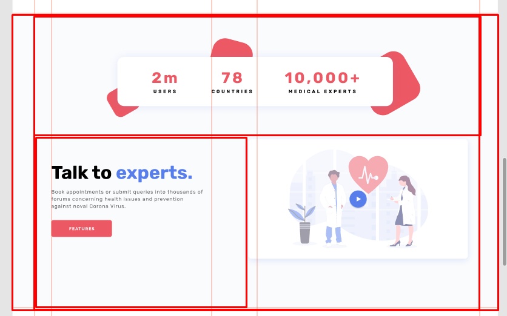
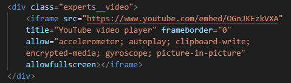
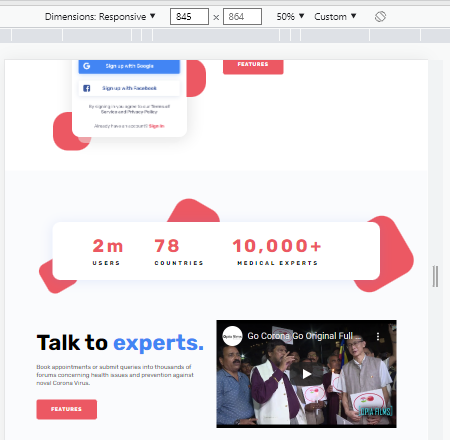

Секция-3
Подготовка
Секция-3 представляет собой довольно интересный блок, состоящий из двух этажей и мы сейчас будем встраивать сюда адаптивное видео.
Что касается брэйкпоинтов, то брэйкпоинты вы можете брать-писать любые. Я просто сейчас, как бы работаю с определенной сеткой, чтобы вам было понятно. Но, в своей работе вы можете использовать абсолютно любые брэйкпоинты, когда видите, что тут надо что-то поменять. В принципе так и нужно делать.
Тут мы уже можем линию переместить немножко, чтобы было лучше

Что тут у нас есть? - Блок, ограничивающий контейнер, первый этаж, состоящий из объекта с декором, цифрами и второй этаж - тоже здесь есть разделение на видео и текст

Тут я все-таки подвину видео, потому что так оно скорее всего и должно быть и, как раз, здесь проходит половинка. Тут мы немножко отступим от макета и сделаем его более нормальным. Здесь это максимально уместно, поэтому я покажу вам и этот прием

Назовем этот блок experts
Затем, создадим ограничивающий контейнер experts__container. И внутри сверху у нас будет experts__statistics statistics-experts

Для решения вопроса с декором, опять же, сделаем объект __body, в который поместим 3 пункта с цифрами и отдельно 3 объекта с декором. Это все у нас будет в блоке experts__statistics statistics-experts. Получается такая структура. Сразу сверстаем первый этаж, чтобы он у нас уже был - копируем классы и переносим в css

Стилизация общего и верхнего блока
Общий блок
Общий фон всей секции, как и у первой секции, серенький
Давайте здесь тоже построим коробку из линий для объекта по прошлому примеру
Отступы: сверху - 53 пикселя, снизу - 116 пикселей

Декор
Я не буду делать также, как прошлый раз с этим декором, покажу немного другой приём. Ширина блока с цифрами 655 пикселей, сразу выставим его по центру через margin, перенесем тень и радиус

Теперь, я попробую высовывать абсолютный декор - просто, чтобы он выглядывал. Попробую теперь такой прием соорудить

Только тогда у меня тут отступ будет гораздо выше - 103 пикселя


Дальше, зададим декору позиционирование по отношению к основному блоку статистики
Теперь займемся объектами декора. Первый объект - задаем свойства и позиционируем к statistics-experts__body

Получаем результат - декор оказался сверху
Поэтому, фон, тень и радиус мы снимем с блока statistics-experts и перенесем непосредственно для statistics-experts__body

И получаем то, что требуется

Вот таким образом я буду делать декор, то есть он будет просто выглядывать. И я вижу, что он выглядывает дальше, чем нужно - это наверное из-за поворота. Ничего, подгоним - исправим координаты с 31 пикселя на 21. Теперь порядок

Блок с цифрами
Все, я понял, что можно так использовать декор. Можно теперь сверстать блок с цифрами


Выставим пункты


Попробую автоматически позволить объектам все заполнить, потому что они тут разной ширины - я думаю, что этого будет вполне достаточно. line-height переведем в относительные единицы


Получилось неплохо, но можем сделать лучше, зафиксировав расположение и размеры пунктов
И закончим с текстом

Завершаем декор
Средний элемент расположен посередине, значит правая координата будет 50%, верхняя - 50 пикселей с повором получается 40 пикселей вверх


И последний декор


Почти получилось. Высота плашки в макете 117 пикселей, а у нас 101. Поэтому декор и проавливается в низ, т.к. плашка у нас получилась тоньше

Это потому, что я не поставил нижний отступ для цифр и внутренние отступы сверху-снизу для всего блока. Исправим ситуацию и добавим потерянные 15 пикселей

Теперь другое дело
Закончили с этим блоком и движемся дальше. Отступ от этого блока вниз 80 пикселей

Нижняя часть секции
Возвращаемся к построению структуры и назовем блок experts__body
Внутри experts__body уже разместим контент и видео

Контент
В контент мы скопируем текстовый блок из верхней секции, т.е. переиспользуем готовый и перенесем в эту секцию, заменив имя блока и текст. При этом добавим к заголовку отдельный класс с модификатором _blue, как в первой секции

Текстовый блок готов, но он наезжает на верхний блок
Такой наезд получился, потому что я применил отступ не к тому блоку. Надо задать отступ 80 пикселей не для experts__statistics, а для statistics-experts__body
Теперь другое дело
Ограничим ширину текстового блока согласно макету
Видео
Как встраивать видео? Мы берем любой ролик на Youtube, там есть кнопка "Поделиться" и затем будет "Встроить"
После нажатия "Встроить" Youtube нам предлагает такой код-айфрейм и надпись "Копировать" - нажимаем, копируем и вставляем в наш код. Убираем из айфрейма размеры, потому что мы будем свои размеры делать


И, собственно, сейчас я вам покажу, как делать адаптивное видео.
.experts__video iframe абсолютим и object-fit: cover. Тут, та же ситуация, что и с картинками мы можем применить object-fit. И, соответственно, для самого блока видео нижний отступ 58%
И сейчас у нас встроенное видео занимает весь экран
- <iframe>
- (от англ. inline frame — встроенный фрейм) создаёт встроенный фрейм, который находится внутри обычного документа, он позволяет загружать в область заданных размеров любые другие независимые документы.
- object-fit
- Управляет соотношением сторон заменяемых элементов, таких как <img> и <video>, когда у них задана ширина или высота, а также способом масштабирования. Свойство object-fit может сохранять исходные пропорции элемента или наоборот, искажать пропорции, в угоду соблюдения размеров.
- cover
- Элемент увеличивается или уменьшается, чтобы целиком заполнить заданную область с сохранением пропорций.
Теперь выровняем блок с контентом и блок с видео
Видео получилось на всю высоту блока
Почему видео получилось на всю высоту, ведь align-items: center. Мы задали для experts__video внутренний отступ снизу 58% - это правильно. Но, во флекс-элементе, это берется от всей ширины родителя и увеличение отступа растягивает и само окно фрейм - поэтому видео занимает все свободное пространство. Соответственно, если мне нужно уменьшить высоту, требуется уменьшить внутренний отступ снизу. И тогда все получается
Осталось добавить отступ "безопасности" справа для контента, чтобы блоки не склеивались при уменьшении экрана
Отлично, теперь видео будет у нас адаптивным.

Адаптив
@media (max-width: 767.98px). Видео, контент
Тут, естественно, мы убираем display: flex и выстраиваем блоки по вертикали. И у нас пропадает ширина и, соответственно, исчезает видео
Почему пропала ширина? Надо убрать align-items: center
- align-items
- Выравнивает флекс-элементы внутри контейнера в перпендикулярном направлении.
- stretch
- Флексы растягиваются таким образом, чтобы занять всё доступное пространство контейнера.
Теперь у нас от другого значения берется процент и нам нужно поменять внутренний отступ для видео на большее значение, примерно 58%, чтобы видео смотрелось адекватно. И для блока контента убрать внутренние отступы и установить отступ от блока видео снизу, чтобы блоки не склеивались.

И блок видео получился совсем адаптивным. Осталось поработать с верхним блоком статистики
@media (max-width: 767.98px). Блок статистики
Во-первых, снизу отступ в 50 пикселей будет достаточно.
Боковые отступы значительно уменьшим и в блоке с цифрами сразу освободится прилично места
@media (max-width: 479.98px)
В этот момент можно цифры перестроить в колонку
Вот таким образом, даже декор смотрится прикольно. Единственное, что стоит добавить, это отступы между пунктами
- :not
- Псевдокласс :not задаёт правила стилей для элементов, которые не содержат указанный селектор.
- Селектор:not(<Селектор>) { ... }
- В качестве селектора могут указываться единичные псевдоклассы, теги, идентификаторы, классы и селекторы атрибутов.
- :last-child
- Псевдокласс :last-child задаёт стиль последнего элемента в группе братских элементов (имеющих одного родителя).
@media (max-width: 767.98px). Доработка
Для всего блока experts немного подуменьшим отступы сверху и снизу

И мы еще пропустили тень на плашке видео. Добавим
- overflow
- Управляет отображением содержания блочного элемента, если оно целиком не помещается и выходит за область заданных размеров.
- hidden
- Отображается только область внутри элемента, остальное будет скрыто.
По дизайну в окне видео встроена картинка с кнопкой. Для того, чтобы сделать запуск по дизайну, нам нужен Java Script. Здесь же, мы просто встаиваем видео.
Секция готова, можно переходить к следующей.